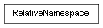

class cymel.utils.namespace.RelativeNamespace¶

-
class
cymel.utils.namespace.RelativeNamespace(namespace=None)¶ ベースクラス:
object相対ネームスペースモードを切り替えるコンテキスト。
Methods:
__init__([namespace])x.__init__(...) initializes x; see help(type(x)) for signature Attributes:
-
namespace¶
Methods Details:
-
__init__(namespace=None)¶ x.__init__(...) initializes x; see help(type(x)) for signature
-